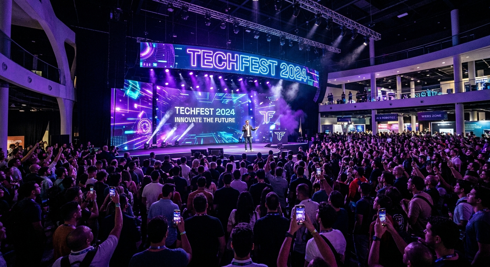
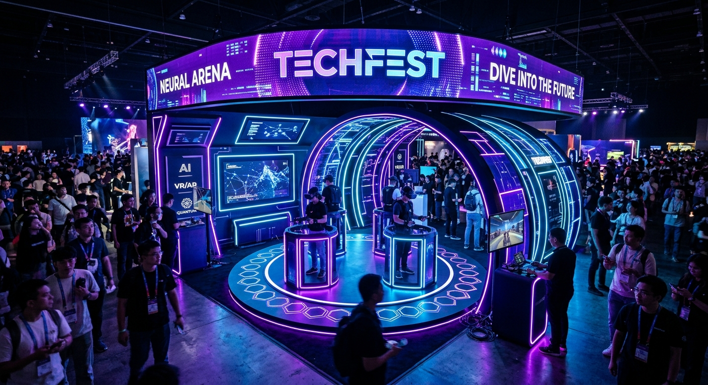
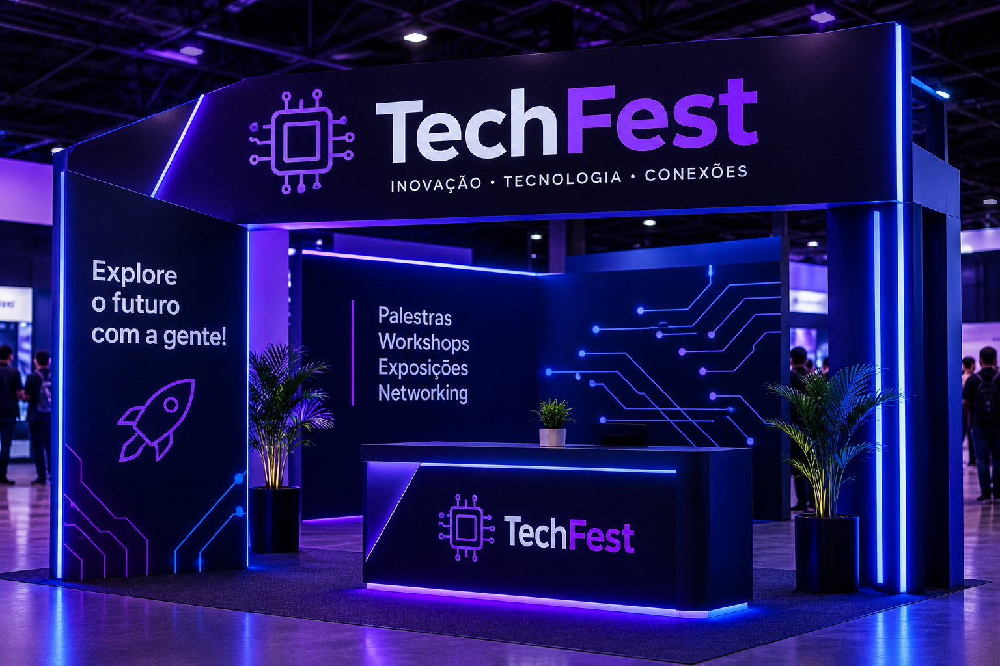
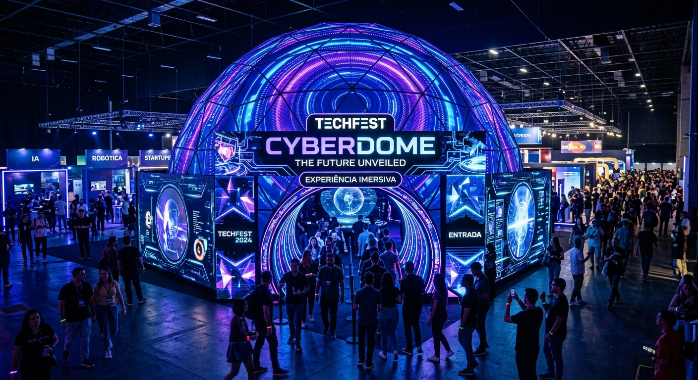
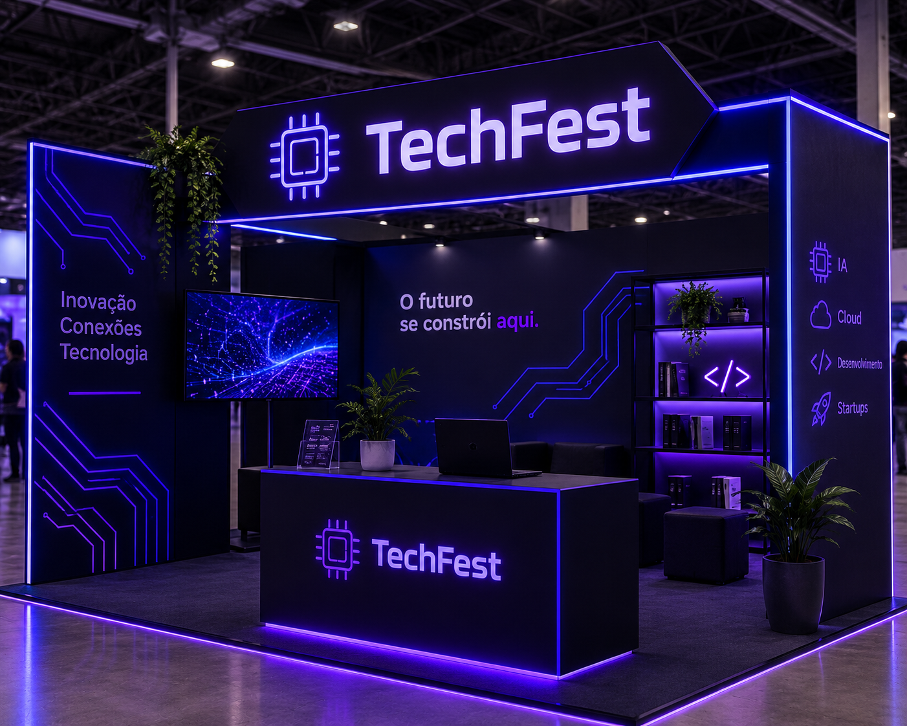
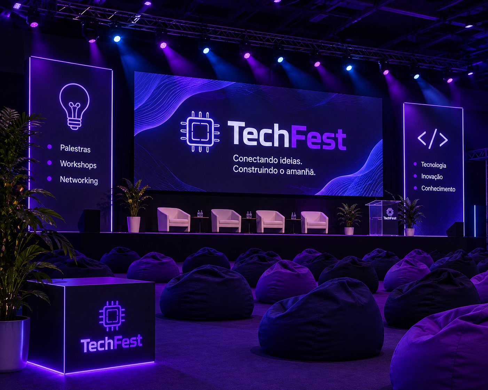
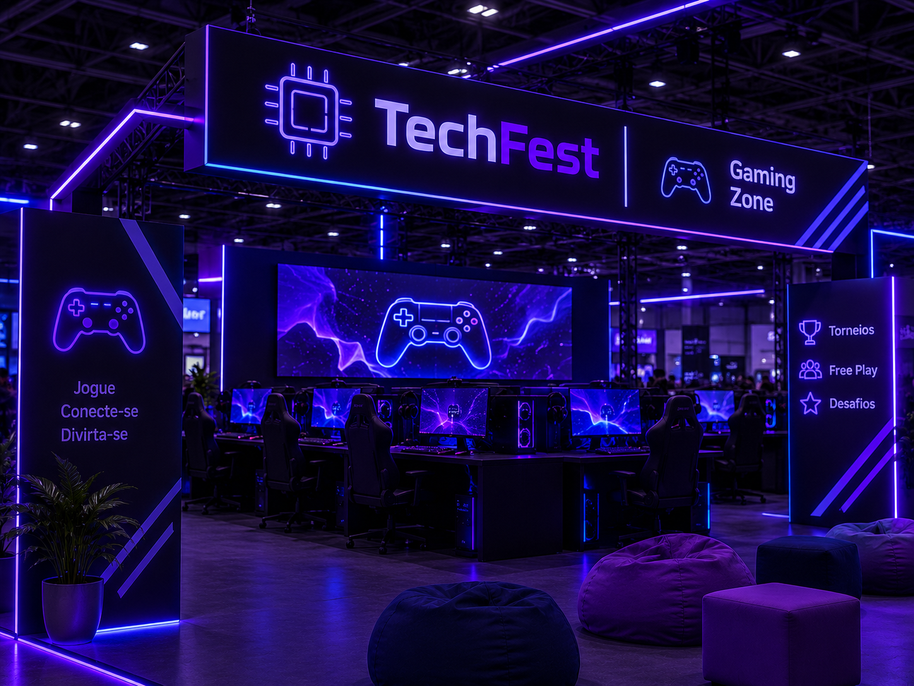

Abertura TechFest
Horário: 19h – 19h30
Gaming Challenge
Horário: 19h30 – 20h30
Mundo da Robótica
Horário: 20h30 – 21h30
Hackathon Experience
Horário: 21h30 – 22h30
O TechFest é um festival tecnológico noturno com estética futurista em roxo e azul escuro. Mistura entretenimento jovem, gastronomia e roda-gigante a um pavilhão geodésico transparente com estações interativas de inteligência artificial, hologramas e realidade aumentada.







Horário: 19h – 19h30
Horário: 19h30 – 20h30
Horário: 20h30 – 21h30
Horário: 21h30 – 22h30
Apresentação oficial do festival, com música, efeitos de iluminação e introdução das atrações da noite.
Competição de jogos digitais, com desafios entre participantes e premiações para os melhores colocados.
Demonstrações de robôs e projetos tecnológicos, apresentando como a robótica pode transformar o futuro.
Atividade colaborativa em que os participantes desenvolvem ideias e soluções criativas para desafios tecnológicos.